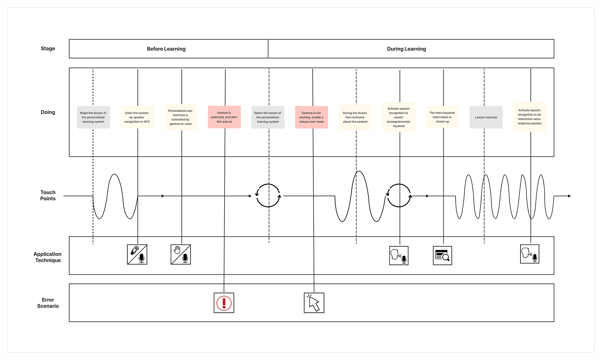

Human-Centered Interactive Interface of Smart TV That Incorporates Audio-Visual Technology into Multi-Modal Smart Devices
Project planning | Scrum | Team Management | Interdisciplinary Collaboration
In this three-year project, we have delivered the prototyping demo systems in two phases.
The first phase focuses on the interaction of smart TV and other smart devices. The major tasks include user- centric design, HTML-5 based cross-platform HCIs, body tracking and gesture detection, language understanding and dialog management system, data mining for smart TV users.
The second phase directs the developed techniques to the future classroom. The major tasks include planning the customer journal map, using voiceprint or smart devices for user identification, natural and HCIs with gestures and voice commands, data mining.
Design Thinking
Our team ran a design thinking workshop, and used different senses to create variety scenarios in Smart TV. We had a preliminary ideation
We made a preliminary ideation. We clarified the users' pain points and the goal of the product, using affinity mapping to identify different perspectives, features, and expectations. This was a form of brainstorming during our kickoff period that proved to be very helpful in setting up the foundation for the rest of our process.
User Journey Research
The future classroom is to provide a student-centered learning environment with differentiated individual educational contents, which encourages students to be independent learners. We started with the customer journey map to identify the needs of the learner and instructor in the whole process of learning.
System Architecture
The system was realized as a web service. Three modules, WEB Client, VISION, and VOICE RECORD in the front end handle the HTTP requests, hand gesture recognition/control, and speech recording, respectively.
The VISION module detects the positions and motions of fingers through the depth image taken from the RealSense’s time of flight camera.
The VOICE RECORD module records the user’s voice and passes the voice to the AUDIO module at the back end, which comprises two submodules, Speaker Identification and Speech Recognition (speech to text conversion).
Another back-end module MINING retrieves the URL of TED-Ed video and maintains the watching history and recommendation list in the database.
The WEB Server replies the HTTP request of the front end, such as the voice transaction, lesson selection, content request, and query by keywords.
Usability Testing
We selected eight students to verify the usability of the designed learning system. The test scenario considered typical usages of interactive learning. The time required for a user to accomplish a series of operations.
Experiments confirmed that the usability of the designed system; the required operational time mostly converges to an acceptable short interval. Exceptionally long time was observed when a user was unfamiliar with gesture control or stood in the wrong position. In those cases, the mouse-over mode will be activated and visual hints that urge the user to move to the adequate position will be offered.
Furthermore, we used eye tracker to objectively and accurately record and analyze visual behavior.
Results
Accoring to the heatmaps and gaze point plots, firstly every participants forcused on the main tasks, and secondly the gesture prompt information. Experiments confirmed that the usability of user interface and achieve the purpose of the gesture prompt information.
The technology research result have been transferred in many domestic industries such as Sampo - speech recognition in smart home, MitraStar - multi-screen streaming in set-top box, and New Kinpo Group - face recognition in AI robot.
What I Learned?
Working on this project from start to finish in a period of 3 years, with over 30 multi-disciplinary researchers has made me appreciate the process.
I have learned how communicating efficiently is while doing the project and how necessary testing is for the evolution of the product.